Discursive Design · Spatial Installation · Cultural Research
DE-GREE: Identity Anxiety in China's AI Transition
What if a degree feels like both shield and trap?
The Question
When the systems that recognise us start to fail, what is a person still worth?
As AI reshapes what work is worth, a generation of highly educated young people in China’s content and creative industries is told a degree is everything — and nothing(Si, 2025). The credential that was supposed to guarantee a future now guarantees very little, yet letting go of it feels like losing the only proof of value you have.
DE-GREE sits with that contradiction. The question was not how to fix the anxiety, but how to make it legible — to let an audience feel the pressure of a collapsing evaluation system in the body, without explaining it to them first.
Research & method
Rather than argue the anxiety, I translated it into a spatial language: the Chinese character “证” (zhèng — certificate, proof, recognition) was deconstructed into a walk-through structure, so the symbol of the credential becomes the architecture a body has to negotiate.
The method was iterative and physical — testing structure, movement, material, and wearable interaction in turn. A lo-fi, real-size “first wall” was built from cardboard to verify that a body actually has to bend and fold to pass through, before scaling up to a full installation footprint of 5m × 3m × 2.2 m.
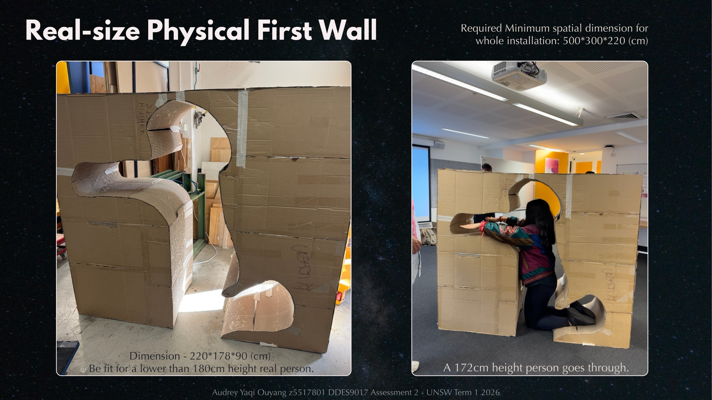
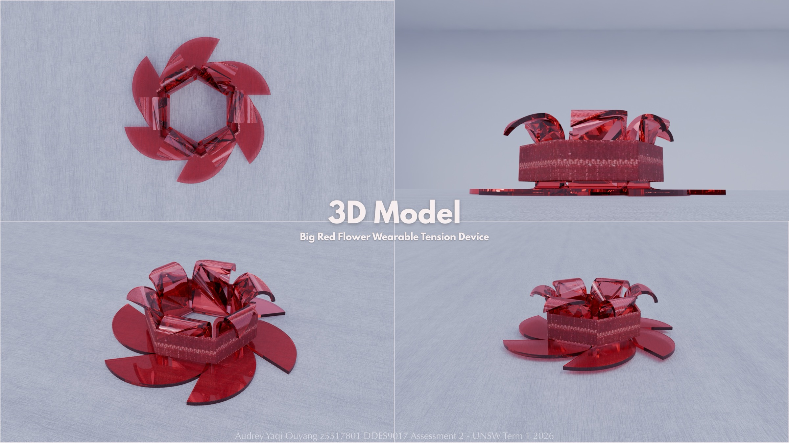
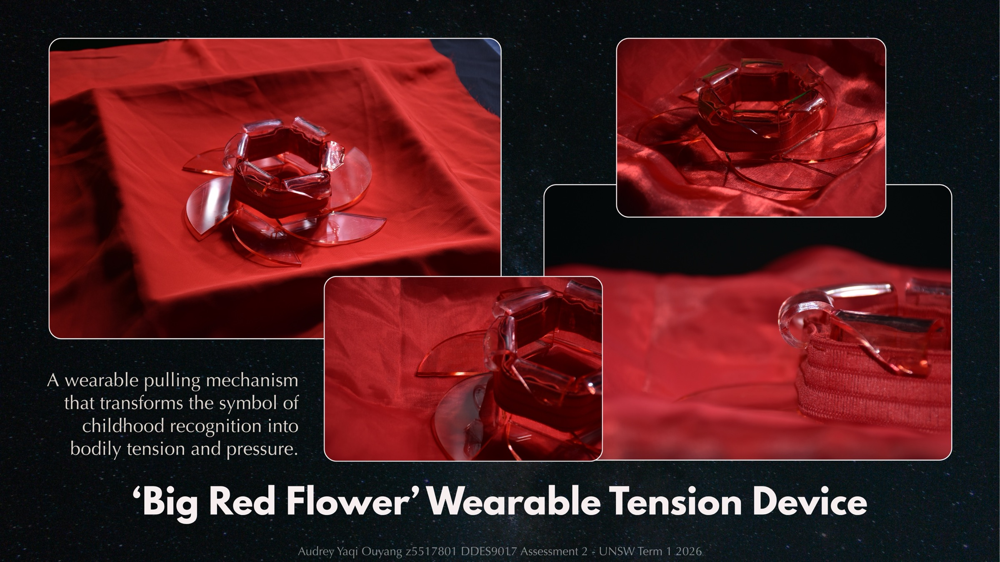
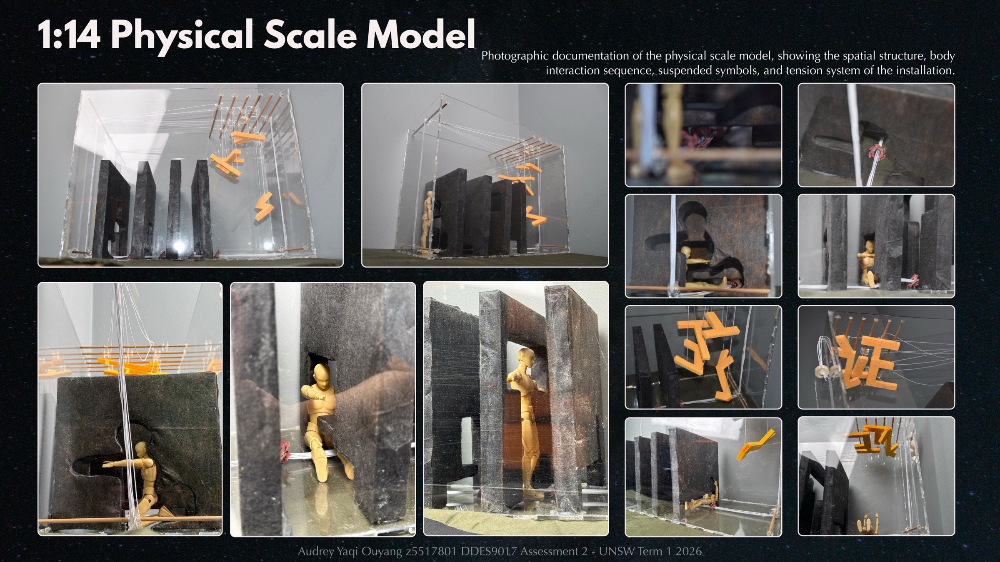
The Experience
Physical interaction is the carrier; critical reflection is the purpose. As a participant moves through the fragmented “证”, their posture, balance, and movement are shaped by resistance, restriction, and instability — invisible psychological pressure made into something the body has to carry. A wearable “Big Red Flower” device — borrowing the Chinese symbol of childhood recognition (大红花) — turns that reward into a pulling mechanism of tension and pressure worn on the body.
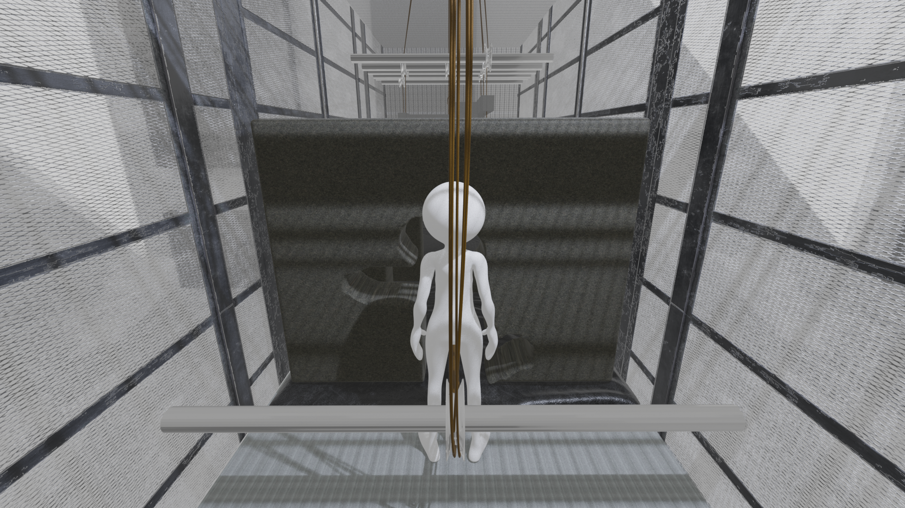
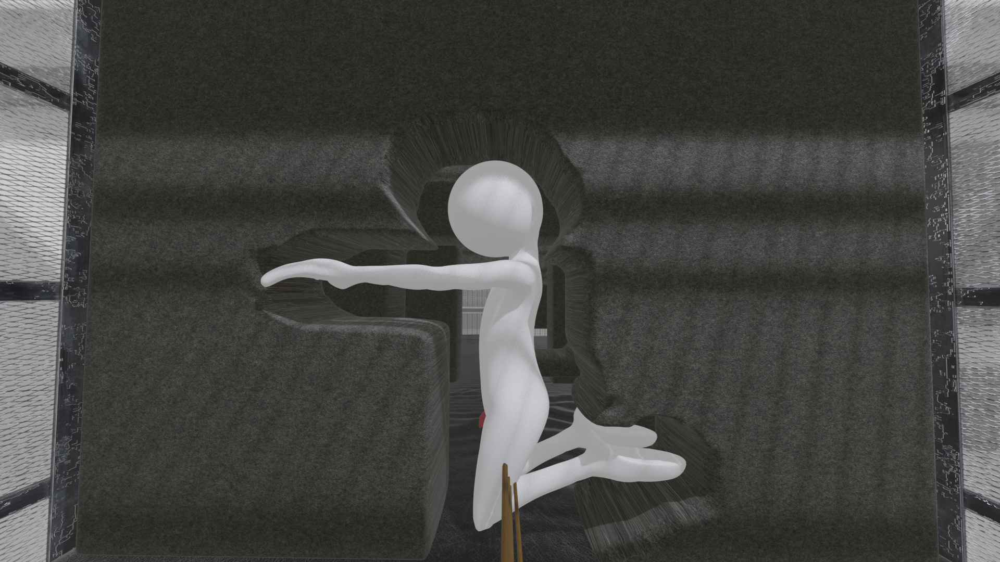
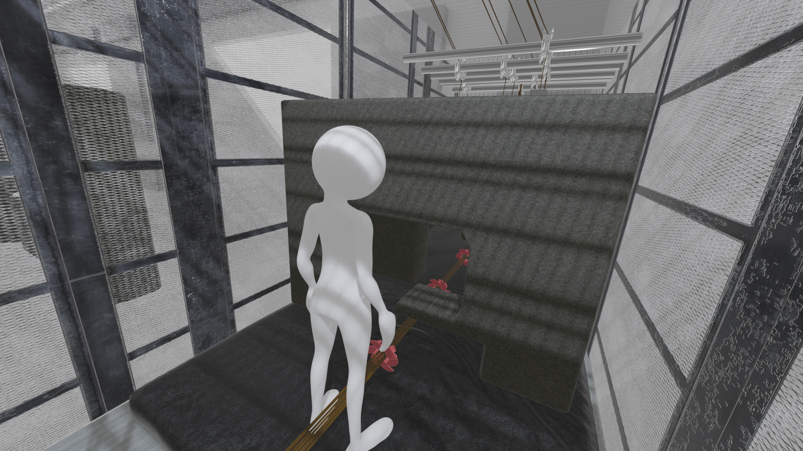
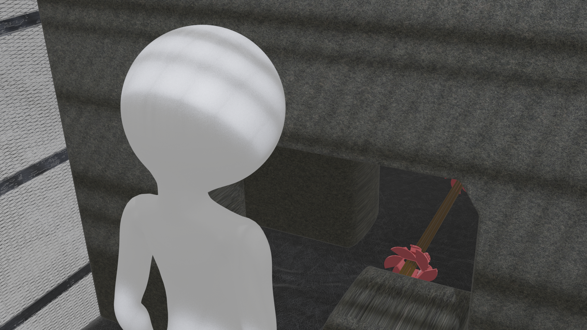
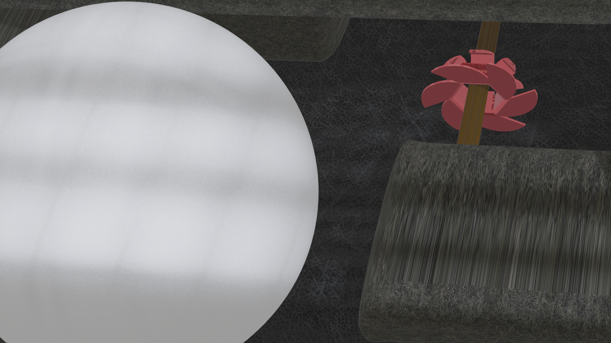
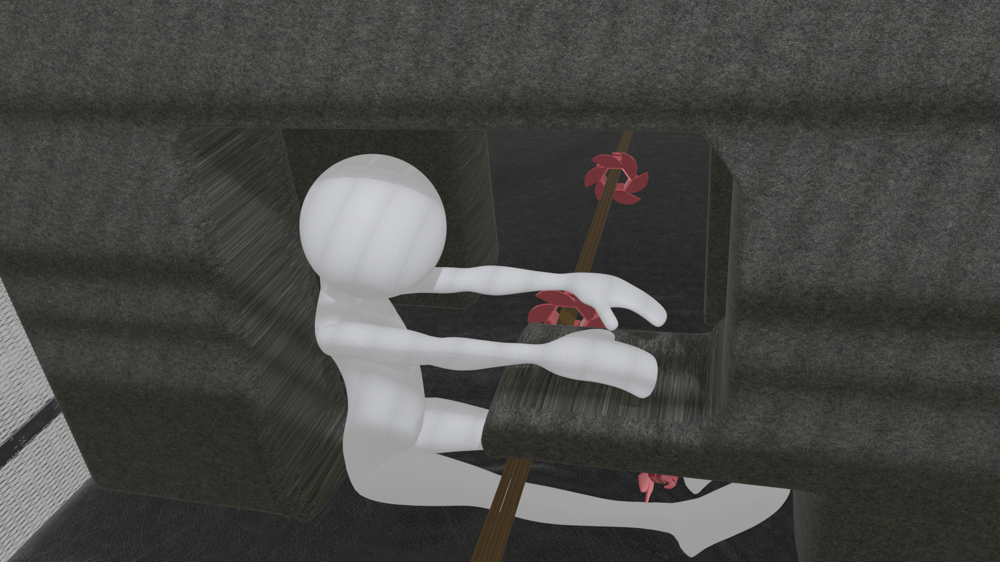
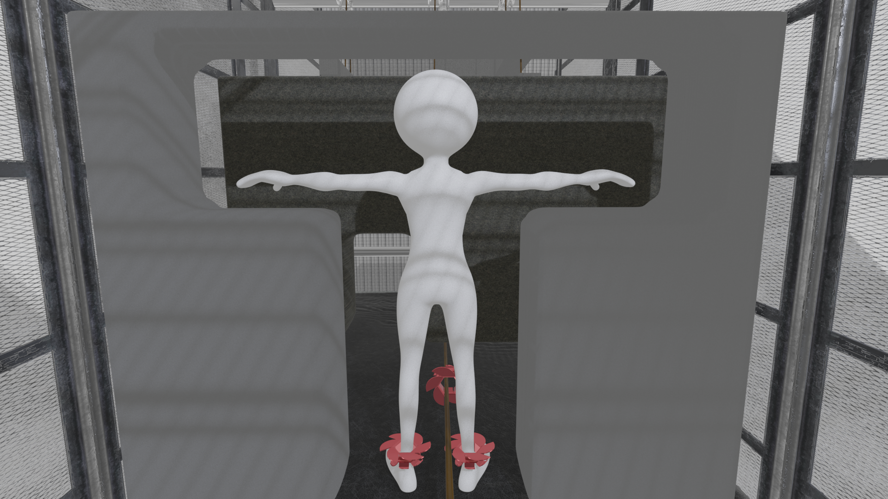
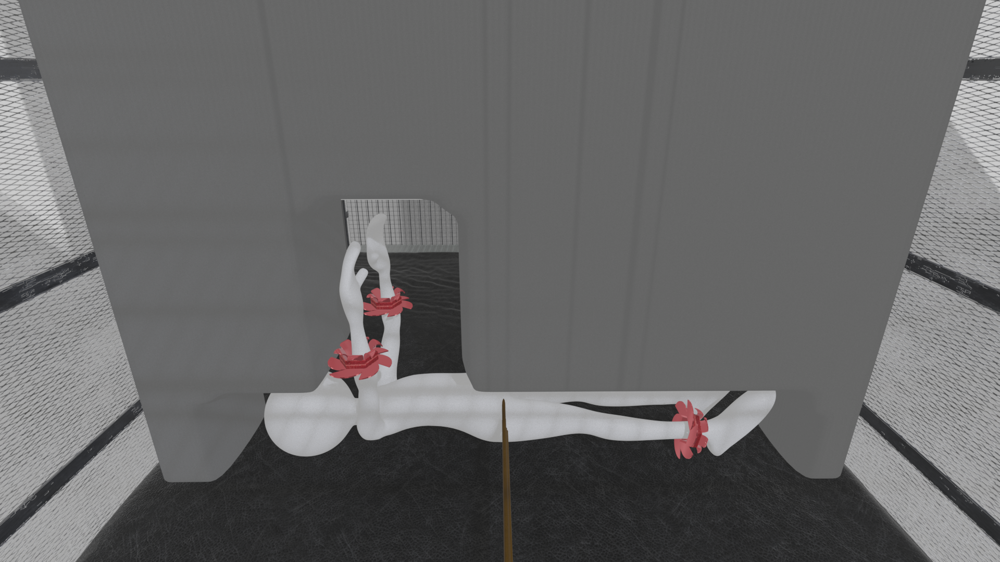
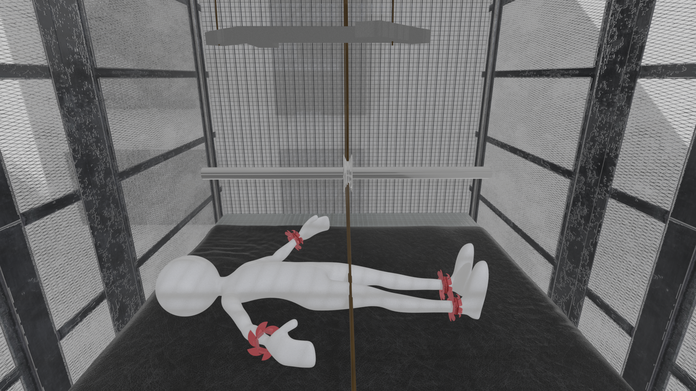
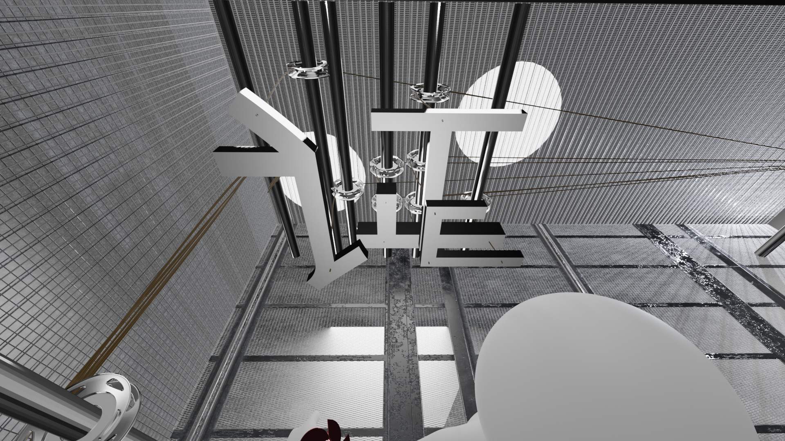
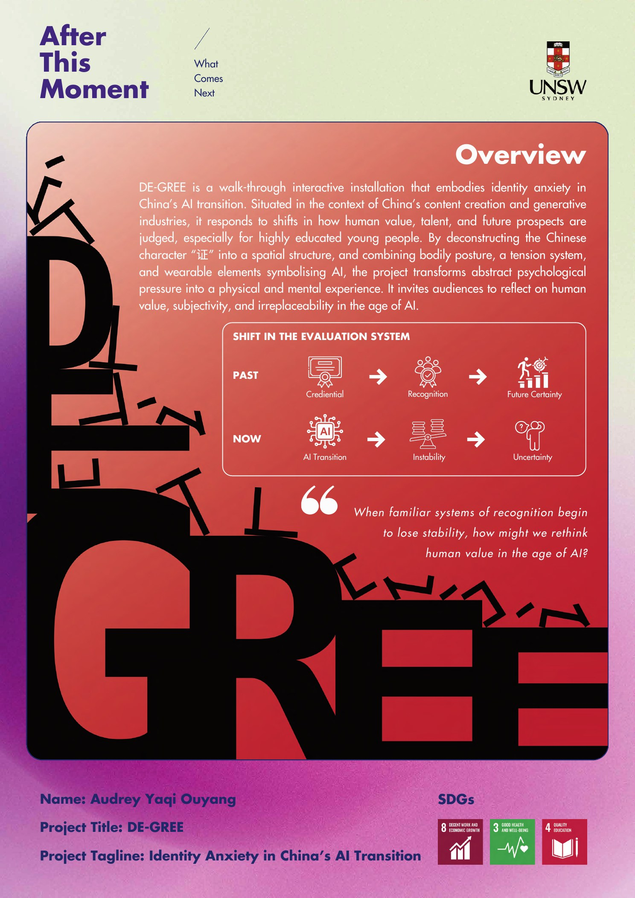
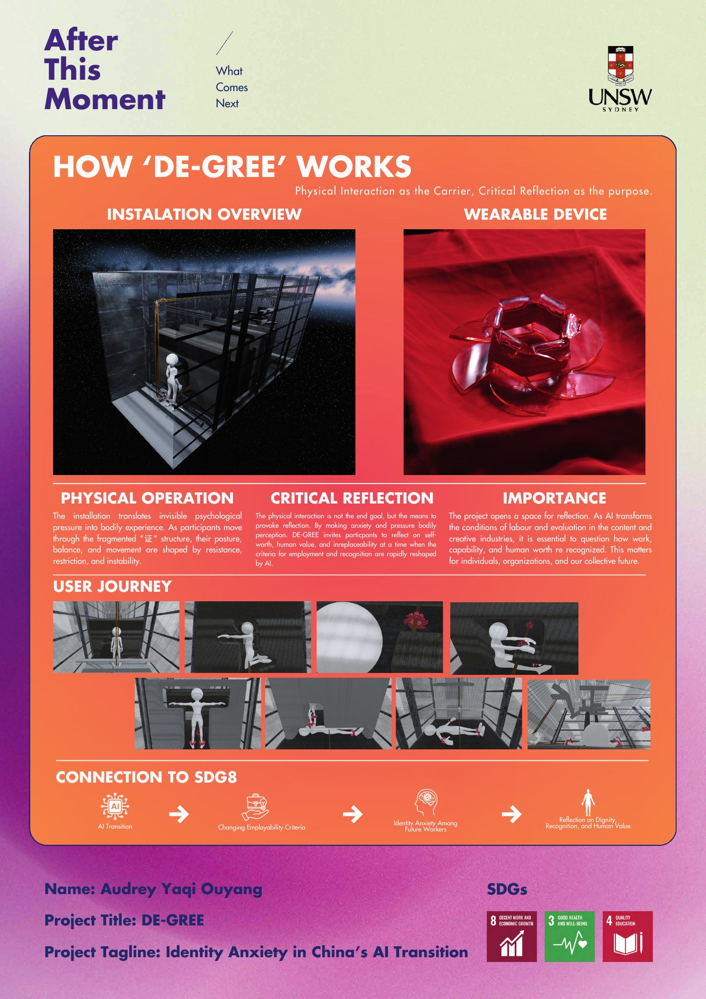
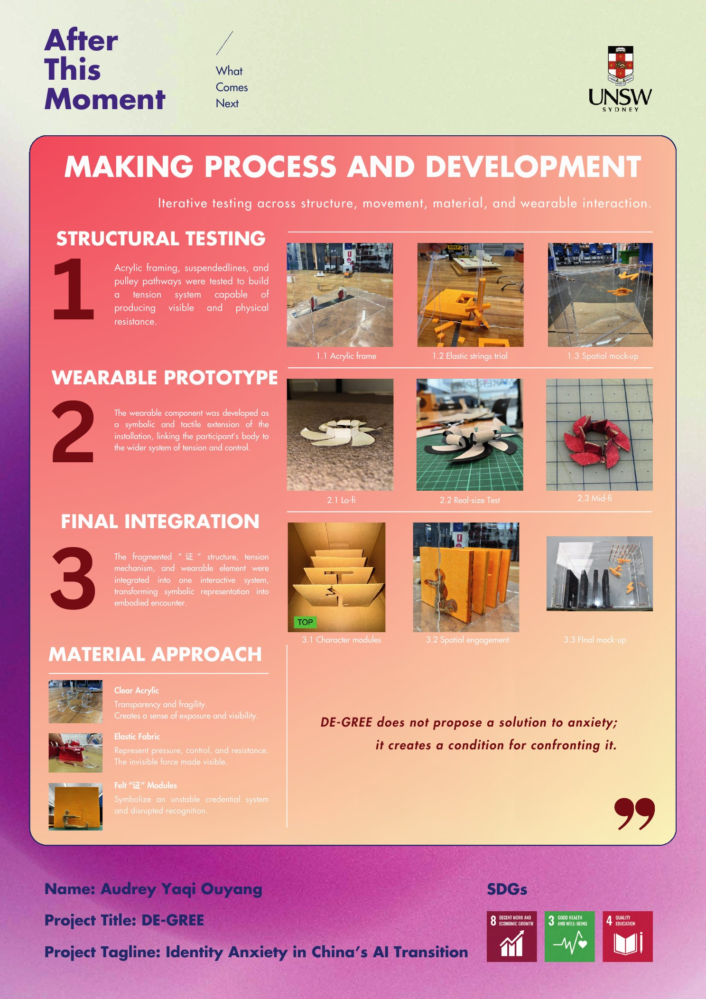
What it revealed
The point was never relief. By making anxiety and pressure bodily perceptible, DE-GREE opens a space to question self-worth, human value, and irreplaceability at a moment when the criteria for recognition are being rapidly rewritten by AI. It connects directly to SDG 8 — decent work and dignity: as AI transforms the conditions of labour and evaluation, it asks how capability and human worth should be recognised, for individuals, organisations, and a shared future.
The strongest proof was watching people resist it — bracing against the tension, choosing how far to bend — and then keep questioning afterwards. The installation doesn’t hand over an answer; it creates the conditions for confronting the futures that are being forced on us.
DE-GREE does not propose a solution to anxiety; it creates a condition for confronting it.
Si, H. (2025). Higher education evolution in China: A systematic review of the internationalisation of higher education in China. Higher Education Quarterly, 80(1). https://doi.org/10.1111/hequ.70088.
Special Thanks
Dr. Michael Garbutt and Catherine Sarah Young PhD, Faculty of Art, Design and Architecture, UNSW Sydney